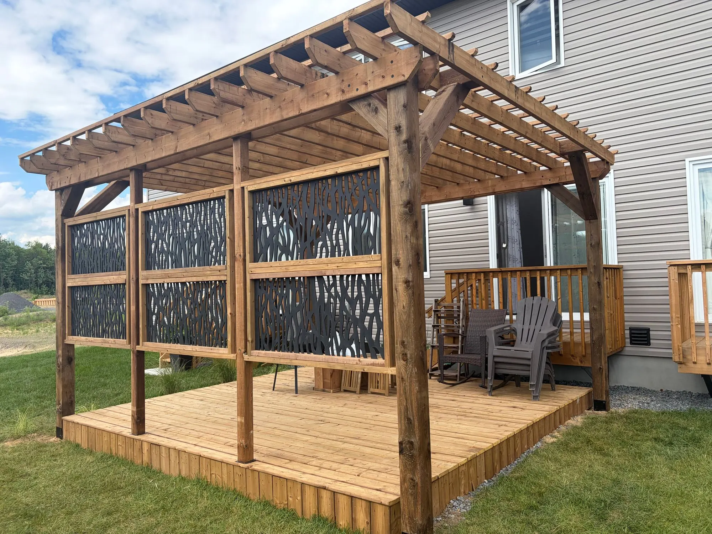
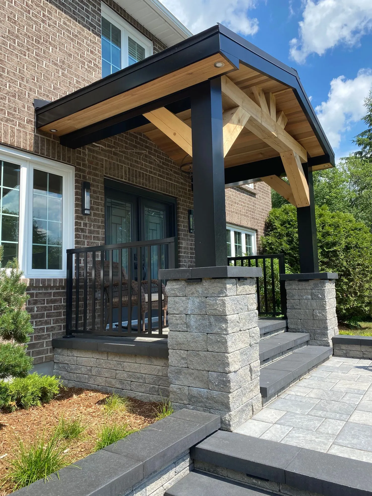

Deck building, porches and pergolas
Decks are our favourite job. We build backyard decks, decks around a pool, two-level decks and covered decks, plus front porches and pergolas, across Ottawa, Kemptville and Richmond.
We design each one to suit your yard and your budget, and build it to last for decades.
Spring and summer is deck season.